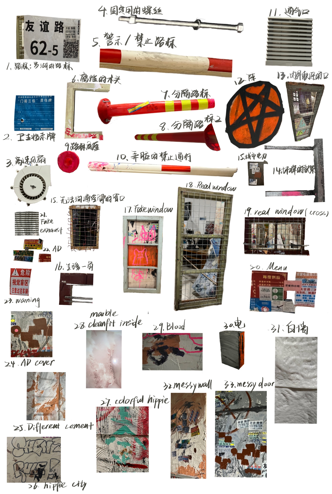
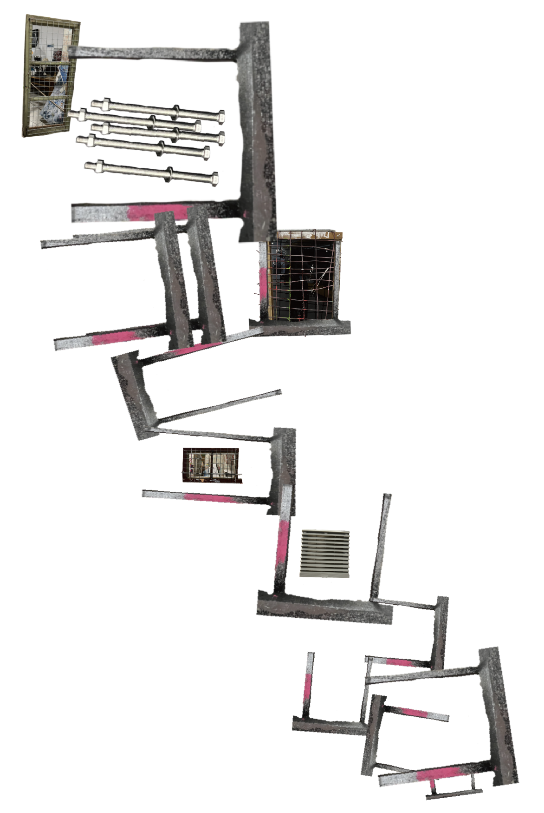

Blindfield


This installation revolves around the architecture and history of the place in Shenzhen, Luohu. Luohu has experienced both prosperity and decline, so it presents a contradictory aspect: densely built but perennially neglected buildings, gray structures alongside brand new red road signs, dark and narrow spaces contrasting with the intense sunlight outside. I combined my feelings about the city with what I actually observed and created a miniature city installation, inviting others to visit, paint, and destroy it – just like the experiences a city goes through.

Details on display include small advertisements, peeling wall paint, wooden windows, iron doors, and traffic safety signs – all of which are scenes I observed in that area.

After completing the work, I invited over a dozen friends to participate in an interactive experience. I created a drawing box where participants drew questions, then pasted them on the outer wall of the installation and answered them by writing directly on the wall. These questions focused on the experience of living in Luohu and impressions of the neighborhood.
Participants were also free to write and draw freely on the wall, to deface it and add graffiti—just as a city experiences over time. Ultimately, the entire installation was violently dismantled, just like those buildings that collapse thunderously throughout the city.